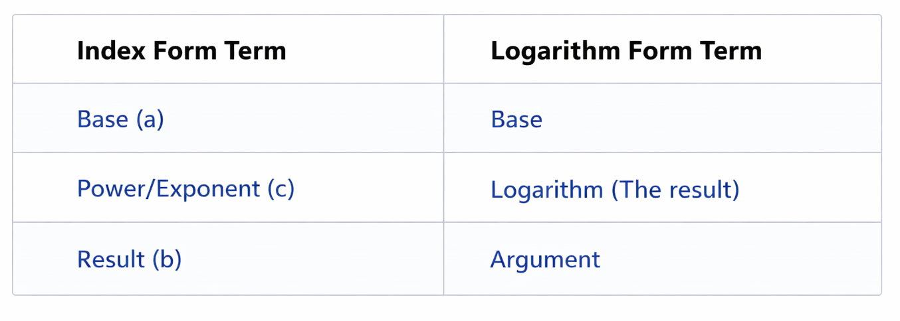

Exponents (or Indices) show how many times a number is multiplied by itself.
example;
x3 = x · x · x
(i) Multiplication Law
To multiply powers with the same base, keep the base and add the exponents.
xᵃ · xᵇ = xᵃ⁺ᵇ
(ii) Division Law
To divide powers with the same base, keep the base and subtract the exponents.
xᵃ ÷ xᵇ = xᵃ⁻ᵇ
(iii) Power of a Power Law
To raise a power to another power, keep the base and multiply the exponents.
(xᵃ)ᵇ = xᵃᵇ
(iv) Power of a Product Law
When a product is raised to a power, apply that power to every factor inside the parentheses.
(xy)ᵃ = xᵃyᵃ
(v) Zero Exponent Law
Any non-zero number raised to the power of zero is always equal to 1.
x⁰ = 1
(vi) Negative Exponent Law
A negative exponent indicates the reciprocal (one over) of the base with a positive exponent.
x⁻ᵃ = 1 / xᵃ
(vii) Fractional Exponent Law
The denominator of a fractional exponent indicates the root, while the numerator indicates the power.
x1/2 = √x
xm/n = ⁿ√(xᵐ)
(i) x² · x³ = x⁵
(ii) x⁶ ÷ x² = x⁴
(iii) (x²)³ = x⁶
(iv) x⁻² = 1/x²
(v) x1/2 = √x
Attempt the following Questions:
(i) Simplify: x² · x⁵
(ii) Simplify: x⁶ ÷ x²
(iii) Simplify: (x³)²
(iv) Simplify: x⁻³
(v) Simplify: x1/2
A logarithm tells us the power to which a base must be raised to get a number.
logₐ(b) = x
where :
The above logarithm is read as:
This is read as : Log "b" base "a" is equal to "x".
MEANING : "x" is the "Logarithm of Argument "b" base "a".
log₁₀(100) = 2
This is read as : Log "100" base "10" is equal to "2".
Meaning ;
10² = 100
This is now in Exponent Form.
Logarithm Form can be changed into Exponent Form and vice versa :
When changing Logarithm Form to Exponent Form :
In simple terms :
We simply swap the "Argument" and the "Logarithm", then remove log.logₐ(b) = x
In this Logarithm :
When converted it to Exponent Form, it becomes :
ax = b
Where :
When changing an Exponent Form to logarithm form :
In simple terms :
We simply swap the "Power" and the "Result", then introduce log.Convert the following Exponent Form to Logarithm Form :
aˣ = b
In this Exponent Form :
"a" is the "base"
"x" is the "power"
"b" is the "result"
When converted it to Logarithm Form, it becomes :
logₐ(b) = x
Where :
For better Understanding, Check out The Table below :
It summarizes The Difference Between Logarithm Forms and Exponent Form (Index Notation)
Exponent Form (Index Form) :ac = b
Logarithm Form :logₐ(b) = c

(i) 2³ = 8
👉 log₂(8) = 3
(ii) 10² = 100
👉 log₁₀(100) = 2
(iii) 3³ = 27
👉 log₃(27) = 3
Attempt the following Questions:
1. Convert to exponential form:
log₂ 8 = 3
2. Convert to logarithmic form:
5² = 25
3. Convert to exponential form:
log₁₀ 1000 = 3
4. Convert to logarithmic form:
3⁴ = 81
5. Convert to exponential form:
log₄ 16 = 2
When Converting Logarithms to Exponents and vice versa :